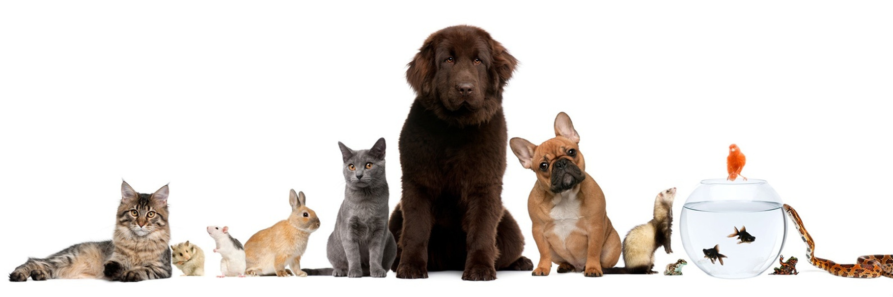

Миссия магазина

«Мы в ответе за тех, кого приручили!»
Антуан де-Сент Экзюпери
Тема отношения людей и животных является одной из самых актуальных, острых и животрепещущих.
Мир, состоящий из животных — это одна составляющая всей природной среды. В природе всё взаимосвязано и сбалансировано.
Животные способствуют постоянному естественному отбору, происходящему, как в растительном, так и в животном мире.
Роль животных в жизни человека и человека в жизни животных, с которыми он сосуществует в течение многих веков, огромна.
Комментируя данную тему, следует отметить, что люди оказываются причастными ко всякой живой сущности, соседствующей с ними.
Необходимо соблюдать баланс в природе, не уничтожать бездумно тех, с кем мы соседствуем на протяжении веков.
Люди должны нести ответственность за тех, кого они приручили, поселили рядом с собой.
Определив для себя их предназначение, люди должны заботиться об их пропитании, создавать приемлемые условия для их существования.